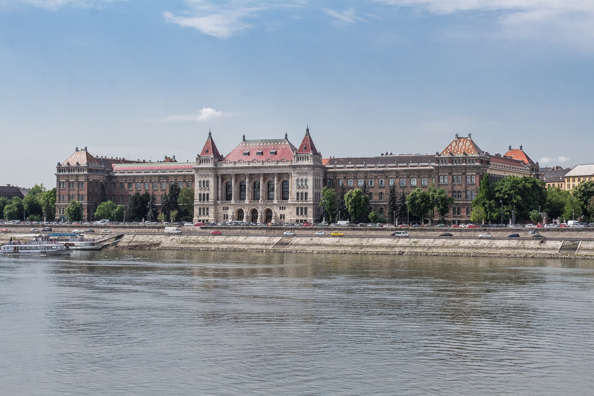

Üdvözlök mindenkit a honlapomon!
Horváth Dávid Tibor vagyok, a Budapesti Műszaki és Gazdaságtudományi Egyetem Energetika szakos hallgatója. Alapvetően kedves, empatikus, figyelmes személyiség. Hobbiaim közé tartozik az olvasás, filmezés. Szeretek új dolgokat kipróbálni és több helyről tapasztalatokat szerezni, ezért is választottam a szakom, mivel egy energetikai mérnök mindenből kap egy keveset.
